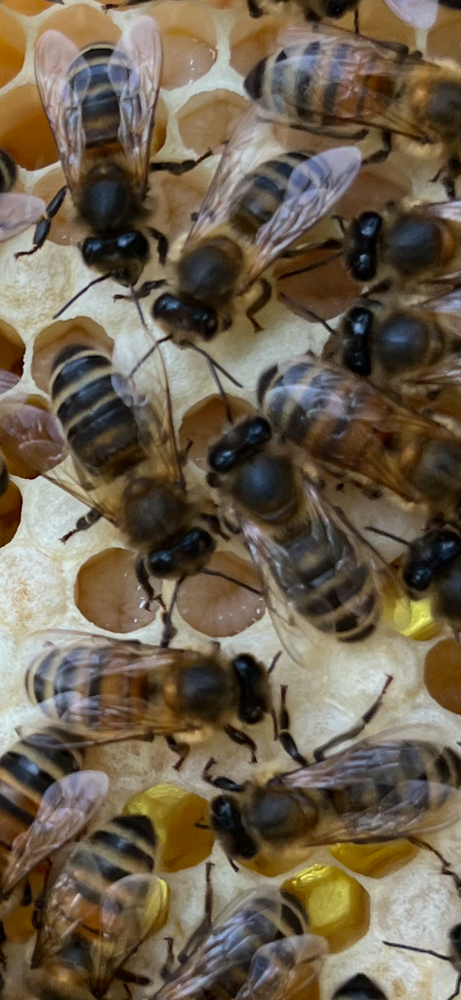

Wee G's Bees
From our four hives in Bannockburn, Wee G's Bees produces small-batch Scottish honey from our own hives.
Our bees forage across the local area, while the honey is extracted and packed right here in Bannockburn, helping to keep food miles low and maintaining a genuine connection between the hive and the jar.

Small-Batch Local Honey
Produced from our own hives and available by local collection, our honey is harvested in small batches and handled with care throughout the process.
Whether you're looking for a jar for the breakfast table or a thoughtful gift, every harvest comes directly from our own bees.
Pure Scottish Honey

The journey from hive to jar is a hands-on process. Honey is carefully extracted and filtered while preserving its natural character.
By keeping production deliberately small-scale, we can focus on quality rather than quantity.

Healthy Bees First
Great honey starts with healthy bees.
What started as a hobby soon became a fascination with bees, beekeeping and great local honey.
Caring for the colonies remains the most rewarding part of the journey. Every hive has its own character, and watching the bees thrive through the seasons is as rewarding as harvesting the honey itself.